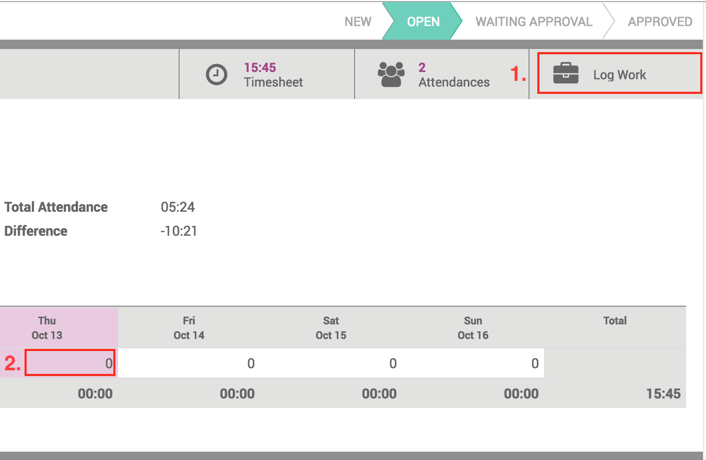
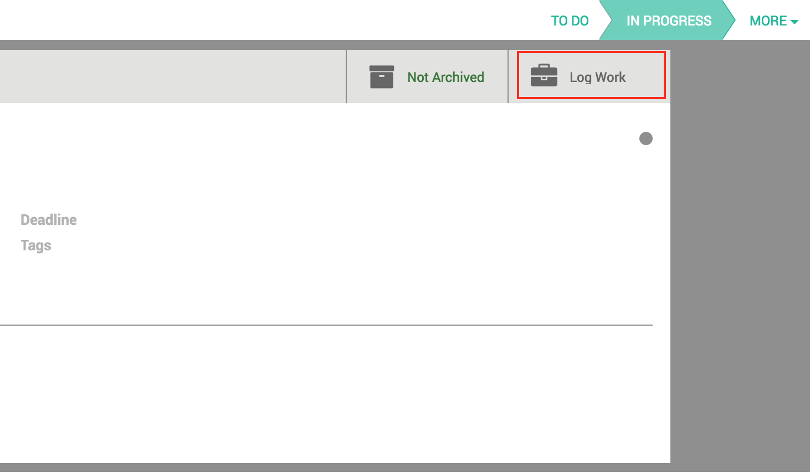

Niboo is a technology company, specialized in developing business solutions to your needs. Niboo combines expertise in both IT and management consulting. As an active partner in the Odoo Community, Niboo also contributes to the evolution of open-source business solutions.
User Guide
How to log time from your timesheets

To log work, go to your timesheets and click on the button Log Work
You can also directly click on the desired line and date and the wizard
will be pre-filled with task (if there is one), project and date
How to log time from tasks
To log work from a task, go to the desired task and click on the button Log Work. The task, project and date will be pre-filled.

Related modules from Niboo
Timesheet - Include leaves
Keep track on your leaves directly from your timesheet.